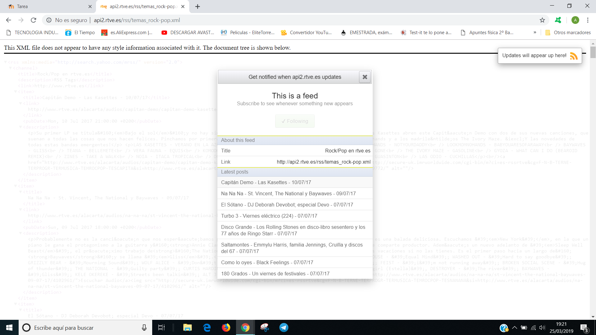

Apartado 3: Busca el canal de los conciertos de radio 3 y subscríbete. Envía el pantallazo de la subscripción e indica cuál es la primera canción del podcast.

Apartado 4: Busca el canal del museo del prado y subscríbete. Envía el pantallazo de la subscripción e indica la última noticia con imagen o vídeo.